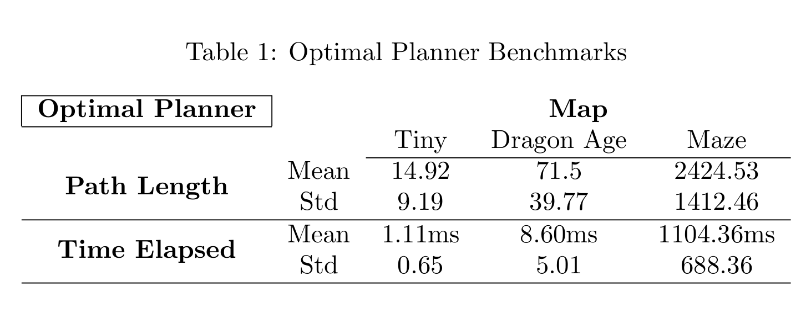
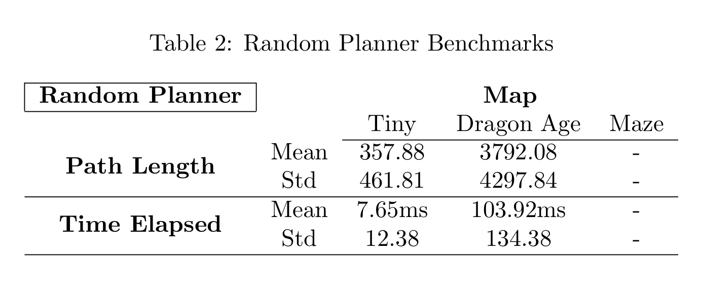

Planners¶
Python module for path planning algorithms on a 2D grid world.
-
algorithms.planner_optimal(world_state, robot_pose, goal_pose)¶ Optimal A* path planner with manhattan distance heuristic. Assumes admissible heuristic.
Parameters: - world_state – 2D matrix representing the world
- robot_pose – Tuple of robot pose
- goal_pose – Tuple of goal pose
Returns: Returns path, a list of tuples of (x, y) coordinates - Returns None if there is an error
-
algorithms.planner_random(world_state, robot_pose, goal_pose, max_step_number=10000)¶ Random walk path planner
Parameters: - world_state – 2D matrix representing the world
- robot_pose – Tuple of robot pose
- goal_pose – Tuple of goal pose
- max_step_number – Max number of iterations before terminating
Returns: Returns path, a list of tuples of (x, y) coordinates - Returns None if there is an error
Planners in this module compute a path from start_pose to goal_pose given a world represented by a 2D list, with 1’s denoting obstacles and 0’s denoting free space.
The random planner is implemented as a simple algorithm where random steps are taken from the start_pose until goal_pose is reached within max_step_number steps. The last sqrt(max_step_number) steps are stored in the list visited, and if possible, the random walk refrains from visiting cells in this list. The planner returns a path, a list of coordinates to reach the goal_pose from the start_pose, if successful. If a feasible path is not calculated in max_step_number steps, or the start or goal states are occupied, the planner will return None.
The optimal planner is implemented as a A* Search algorithm. The planner returns a path if successful, and returns None if it fails. The heuristic is selected as the manhattan distance, which is proven to be admissible in orthogonally connected grid worlds.
Simple Example¶
# Simple example for planner usage
# User can adjust parameters world, start_pose, and goal_pose to get results on planners
world = [[1, 1, 1, 0, 0, 0, 0],
[1, 1, 1, 0, 0, 1, 0],
[1, 0, 0, 0, 0, 1, 1],
[1, 0, 0, 1, 0, 0, 0],
[1, 1, 1, 0, 0, 0, 0],
[1, 0, 1, 1, 1, 1, 0],
[1, 0, 1, 0, 0, 1, 0],
[1, 0, 0, 1, 0, 0, 0],
[1, 0, 0, 0, 0, 0, 0],
[1, 1, 1, 1, 0, 0, 0]]
start_pose = (3, 1)
end_pose = (5, 1)
t = time.time()
optimal_path = planner_optimal(world, start_pose, end_pose)
print "Time elapsed: ", tools.sec_to_ms(time.time() - t), "ms"
print "Optimal path: ", optimal_path
print "Length: ", tools.path_length(optimal_path)
t = time.time()
random_path = planner_random(world, start_pose, end_pose)
print "Time elapsed: ", tools.sec_to_ms(time.time() - t), "ms"
print "Random path: ", random_path
print "Length: ", tools.path_length(random_path)
The above code will print:
Time elapsed: 0.618934631348 ms
Optimal path: [(3, 1), (2, 1), (2, 2), (2, 3), (2, 4), (3, 4), (4, 4), (4, 5), (4, 6), (5, 6), (6, 6), (7, 6), (7, 5), (7, 4), (8, 4), (8, 3), (8, 2), (7, 2), (7, 1), (6, 1), (5, 1)]
Length: 20.0
Time elapsed: 0.396013259888 ms
Random path: [(3, 1), (3, 2), (2, 2), (2, 1), (2, 2), (2, 3), (1, 3), (1, 4), (2, 4), (3, 4), (4, 4), (4, 3), (4, 4), (4, 5), (3, 5), (3, 6), (4, 6), (5, 6), (6, 6), (7, 6), (7, 5), (8, 5), (8, 6), (9, 6), (9, 5), (9, 4), (8, 4), (8, 3), (8, 2), (7, 2), (7, 1), (6, 1), (5, 1)]
Length: 32.0
Helper Tools¶
Module for helper functions for the planners.
-
tools.get_octile_nbors(world_state, pose)¶ Returns a list of unoccupied octile neighbors of a cell ‘pose’
-
tools.get_orthogonal_nbors(world_state, pose)¶ Returns a list of unoccupied orthogonal neighbors of a cell ‘pose’
-
tools.manhattan_dist(pose1, pose2)¶ Returns manhattan distance between two poses
-
tools.path_length(path)¶ Returns path length. Useful if neighborhoods other than orthogonal is allowed.
-
tools.random_walk(world_state, pose)¶ Returns tuple of a random valid neighboring cell to cell ‘pose’
-
tools.random_walk_memory(world_state, pose, visited)¶ Returns a random valid neighboring cell that is not recently visited. Can return visited cells if there is no other option
-
tools.read_world_file(filename)¶ Loads world from file, returns world_state as 2D list
-
tools.validate_input(world_state, start_pose, goal_pose)¶ Returns false and prints error message if inputs to the planner are not valid - Returns true otherwise
-
tools.within_bounds(world_state, pose)¶ Returns true if pose is inside bounds of world_state
Benchmarks¶
Benchmark Results¶
Benchmark results are obtained by selecting random problems from three hand picked problem sets from the Moving AI lab website. Problem sets and world files can be found in the benchmarks folder. Additional benchmarks can be downloaded at:
The problem sets are:
- tiny.map.scen 21x30 map with relatively few open spaces. Similar to a generic indoor environment.
- dragonage.map.scen 49x49 map ripped from the video game Dragon Age: Origins. Similar to a generic outdoor environment.
- maze.map.scen 512x512 map with very complex corridors of width 1. Artificial environment for testing.
{kind=link}
{kind=link}
{kind=link}
Each problem set contains hundreds of problems with valid start and goal positions, and a world map. The world map representation is slightly different, with . denoting empty states. The world maps are converted to 1 and 0 representation with the tools.read_world_file() function.
100 problems are picked randomly from each problem set, and path lengths and computation times are calculated. Means and standard deviations are reported for each problem set.
The A* algorithm can find the optimal path reasonably fast in all three problems. Even the complicated maze problem can be solved in about a second on average.
The random planner is only viable in tiny maps with narrow corridors. Compared to the A* algorithm, the random planner performed an order of magnitude worse. Even in the smallest map in the problem set, the mean path length is 357.88 compared to A*’s 14.92, and the computation speed is 7 times slower. The difference is even larger with the intermediate sized map, and the random planner completely fails to find a path in 100000 steps, thus, no results are provided on the random planner with the maze map.
Code Correctness¶
Optimality of the A* Algorithm has been verified by selecting many problems from the problem sets and comparing the path lengths computed with the planner with the values reported in the sets. All tests were passed. Since the problem sets are originally 8-connected, octile neighborhoods were allowed when testing this way.
Remarks on Complexity¶
Benchmarking Code¶
Benchmark module for evaluating planners performance by reporting results on computation time and path length. Three sample problems have been selected from http://www.movingai.com/benchmarks/ website.
-
benchmarks.benchmark(problem_file, test_set_file)¶ Evaluates planners with a random problem from a given problem set and world map. Assumes feasible paths can be calculated.
Parameters: - problem_file – A string of map file with .map extension
- test_set_file – A string of problem set file with .scen extension
Returns: Returns a tuple of (results_optimal, results_random) where each element is a custom data structure carrying calculated path, path length and time elapsed to calculate path.
-
benchmarks.statistics(benchmarks)¶ Prints statistical results for a given set of benchmarks. Reports mean and standard deviations on total path length and standard deviations